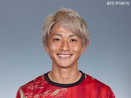

宇賀神友弥 背番号3
UGAJIN Tomoya
1988年3月23日
172cm / 71kg
柏木陽介 背番号10
KASHIWAGI Yosuke
1987年12月15日
176cm / 73kg
田中達也 背番号11
TANAKA Tatsuya
1992年6月9日
172cm / 69kg
伊藤涼太郎 背番号13
ITO Ryotaro
1998年2月6日
174cm / 66kg
明本 考浩 背番号15
AKIMOTO Takahiro
1998年1月31日
170cm / 65kg
伊藤敦樹 背番号17
ITO Atsuki
1998年8月11日
182cm / 78kg
- 
小泉佳穂 背番号18
KOIZUMI Yoshio
1996年10月5日
172cm / 63kg
金子 大毅 背番号19
KANEKO Daiki
1998年8月28日
177cm / 67kg
大久保 智明 背番号21
OKUBO Tomoaki
1998年7月23日
170cm / 62kg
阿部 勇樹 背番号22
ABE Yuki
1981年9月6日
178cm / 77kg
汰木 康也 背番号24
YURUKI Koya
1995年7月3日
183cm / 70kg
柴戸 海 背番号29
SHIBATO Kai
1995年11月24日
180cm / 70kg
武田 英寿 背番号37
TAKEDA Hidetoshi
2001年9月15日
177cm / 69kg
関根 貴大 背番号41
SEKINE Takahiro
1995年4月19日
167cm / 61kg